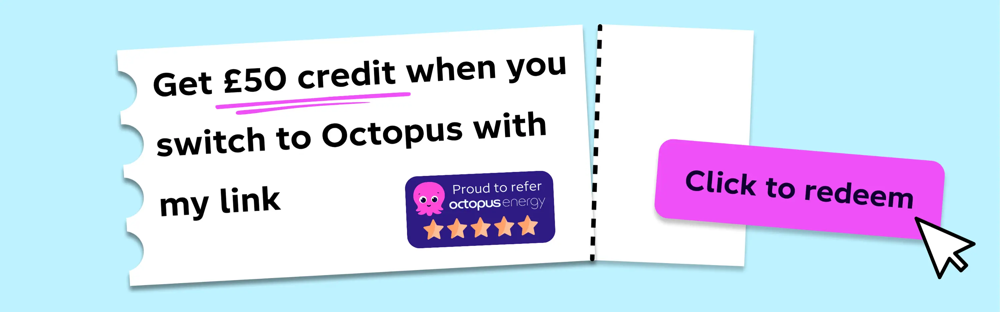
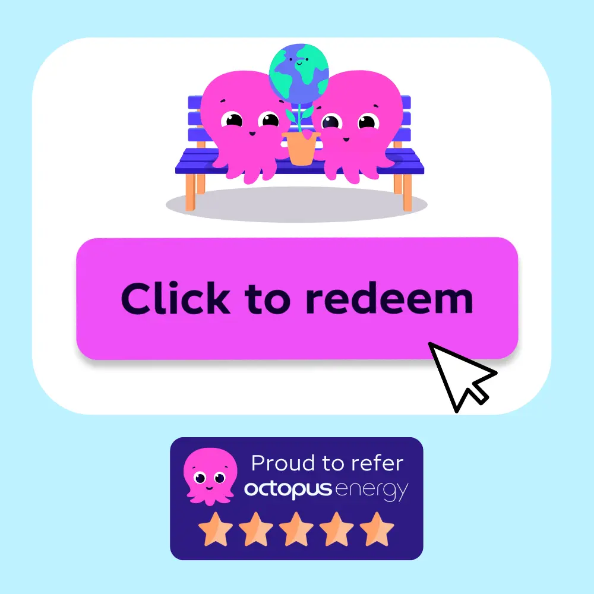
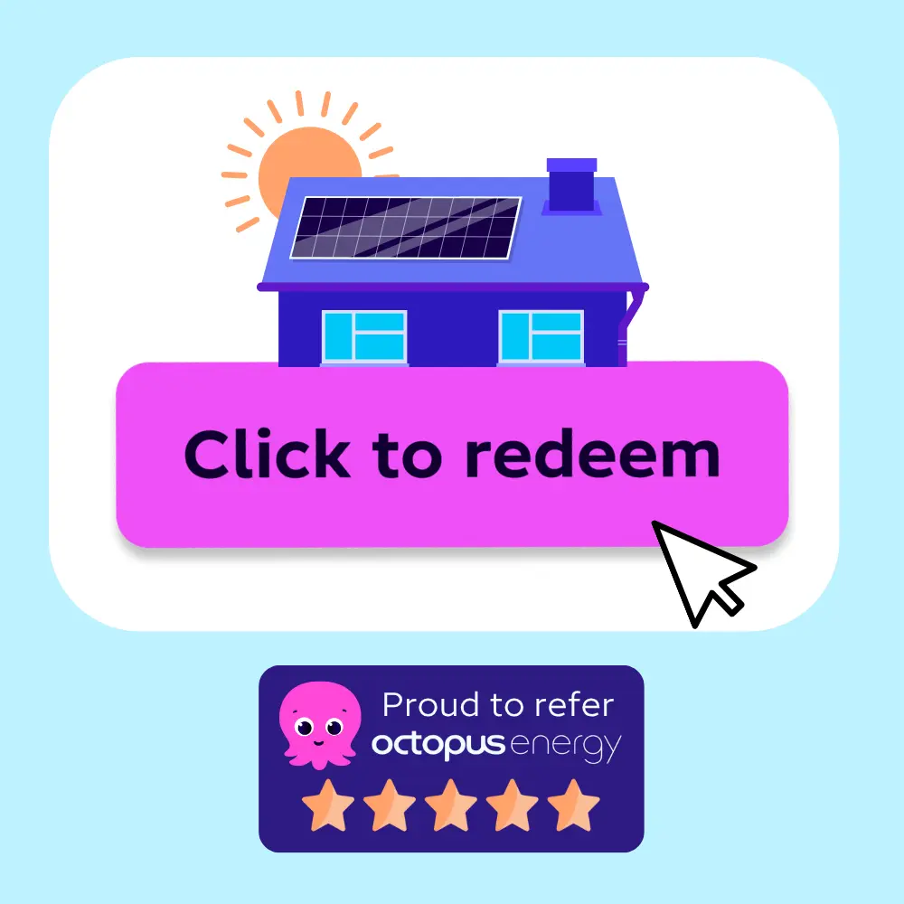
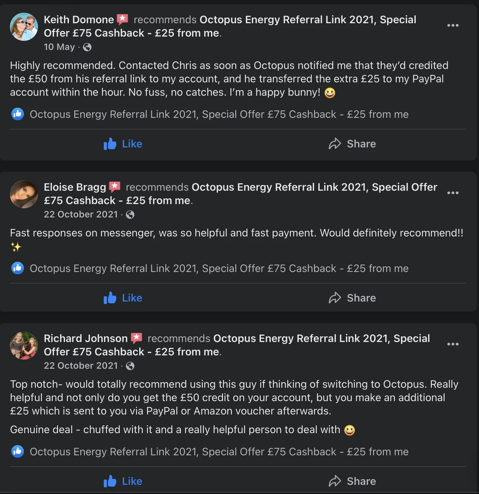

Use an Octopus Energy referral link
If you are switching your home energy supply to Octopus Energy, a referral link can add £50 account credit after your switch qualifies. My referral link starts your quote on the official Octopus Energy website.
I also offer an extra £25 thank-you payment after Octopus confirms the qualifying switch. That means a qualifying switch can be worth £75 in total: £50 account credit from Octopus plus £25 from me.
This website is independent. I am an Octopus customer/referrer, not Octopus Energy. You should compare the quote, unit rates, standing charges and tariff details before switching.
Start your Octopus quote
Existing customer? Find out how you can benefit too. T&Cs apply (only one switching offer per household).
Last reviewed: 11 May 2026. Referral amounts and tariff details can change, so check the official Octopus pages before you complete a switch.

-
1. Open the referral link first
Use the referral button before starting your quote. This sends you to the official Octopus Energy quote journey with the referral attached.
-
2. Complete your own details
You enter your own postcode, usage, meter and payment details directly with Octopus. I do not enter customer data for you.
-

3. Wait for confirmation
Octopus says credit is paid after you are on supply and your first direct debit has been taken. Their guidance says this is typically around four weeks.
Eligibility and important terms
The referral reward is intended for qualifying new Octopus Energy customers who sign up directly through a referral link. The official Octopus referral guidance says the reward is not paid if the customer joins through another route such as a price comparison site.
Octopus terms also exclude some cases, including existing Octopus customers, customers supplied under some Octopus whitelabel brands or Bulb supply, customers who have been with Octopus in the previous 12 months, and switches that are cancelled before the supply start date or before the first successful direct debit.
If you qualify for more than one switching incentive, Octopus may only apply one incentive. If you have already had a switching offer or referral reward at the same household, check with Octopus before relying on a new referral credit.
Useful official links: Octopus referral FAQ, Octopus high referrer terms, and Octopus domestic supply terms.
What to check in your quote
A referral code does not make every tariff the right choice. Before you complete the quote, compare the numbers on the Octopus page with your current supplier and any fixed deals available to you. The most important figures are the electricity unit rate, gas unit rate, daily standing charges, payment method, exit fees and whether the quote uses your real annual usage or an estimate.
If you can, use annual kWh figures from a recent bill rather than a broad usage estimate. Energy suppliers can estimate your usage, but a household with electric heating, an EV, solar export or unusual working patterns can be very different from an average home. A small difference in estimated usage can change the monthly direct debit Octopus suggests.
Also check whether your current deal has an exit fee or a fixed-rate end date. A £50 referral credit, or £75 including my extra payment, can be useful, but it should not cancel out a worse tariff or a penalty for leaving an existing deal early.
If you are not sure how to step through the quote, read the switching checklist before opening the referral link.
Referral link or comparison site?
Comparison sites are useful for seeing a wider market view, but Octopus says referral credit is only available when the referred customer signs up directly through the referral route. If you choose a quote through a third party, Octopus may need to honour that route instead, which can mean no referral credit.
A practical way to handle this is to use comparison sites for research, then open the referral link and compare the official Octopus quote before deciding. Do not assume the referral offer is the best overall deal until you have checked the actual tariff rates and your current supplier's terms.
If the quote looks wrong, or if your meter setup is unusual, stop and ask Octopus before switching. This is especially important for prepayment meters, Economy 7, complex smart-meter issues, business supplies, homes with export meters, or anyone who has recently been an Octopus, Bulb, Co-op Energy or other related-brand customer.
Why this page is careful about claims
Energy is a regulated household service, so referral pages should be clear about who runs them, what is being offered, and what the referrer can and cannot help with. This website can explain the referral process and arrange the extra £25 payment I offer, but it cannot set your tariff, guarantee acceptance, change Octopus terms, resolve billing issues or promise that Octopus will be cheapest for your home.
That is why this page links to official Octopus and Ofgem sources instead of relying only on marketing claims. It also avoids asking for sensitive information through the contact form. Your switch, quote and account details should be handled directly on Octopus Energy's own website.
The £50 referral credit is only one part of the decision. The bigger question is whether Octopus offers a tariff that suits your home, usage and equipment.
From 1 April to 30 June 2026, Ofgem set the price cap for a typical dual-fuel Direct Debit household at £1,641 per year, down 7% from the previous cap period. The cap is not a fixed bill: what you pay depends on your actual usage, region, payment method, tariff and standing charges.
Octopus offers standard and smart tariffs, including Flexible Octopus, Agile Octopus, Tracker, Intelligent Octopus Go for EV charging, Cosy Octopus for some heat-pump homes, Flux and Outgoing options for homes with solar or batteries. Some smart tariffs need a smart meter or qualifying low-carbon technology.
For trust context, Which? named Octopus Energy a Recommended Provider for energy in 2026, and Octopus announced in April 2026 that it had passed 8 million UK customers. Those are useful signals, but they do not replace comparing your own quote.
Sources: Ofgem April 2026 price cap, Octopus smart tariffs, Octopus EV tariffs, Which? 2026 Recommended Providers, and Octopus 8 million customer announcement.

Referral support and reviews
Some people prefer a real person to contact if they are using an independent referral link. I can answer questions about the referral process and the extra £25 payment, but Octopus Energy remains responsible for your quote, supply contract, billing, meter readings and account support.
After your qualifying switch is confirmed, contact me with the details needed to match your referral and arrange the extra £25 by PayPal or Amazon Gift Card. Do not send me meter numbers, bank details or Octopus login details.
You can also read more about who runs this referral site, how payouts work, and what I can and cannot help with.
Read referral reviews

What is the current Octopus referral offer?
For qualifying home energy switches, Octopus says the referred customer and referrer each get £50 account credit. This page also offers an extra £25 from me after the qualifying switch is confirmed.
Can I use a referral code after I already signed up?
Octopus says you can contact them if you forgot to use a referral link, provided you signed up directly through Octopus. It is better to use the referral link before starting your quote so the referral is attached from the beginning.
Can business customers use this page?
Business energy referrals can have different rewards and terms. If you are switching a business supply, check the official Octopus business referral route rather than relying on a domestic referral page.
Is the £25 extra payment from Octopus?
No. The extra £25 is paid by me from my referrer reward after the qualifying switch is confirmed. The Octopus account credit is separate and is handled by Octopus.
Can I still compare prices?
Yes. You should compare the Octopus quote with your current supplier and other available tariffs. If you switch through a price comparison site instead of a referral link, Octopus says the referral reward may not apply.